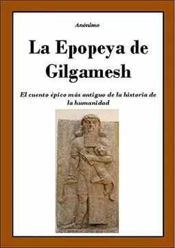
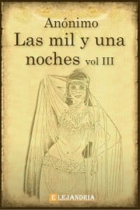
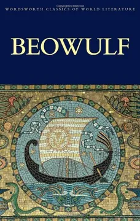
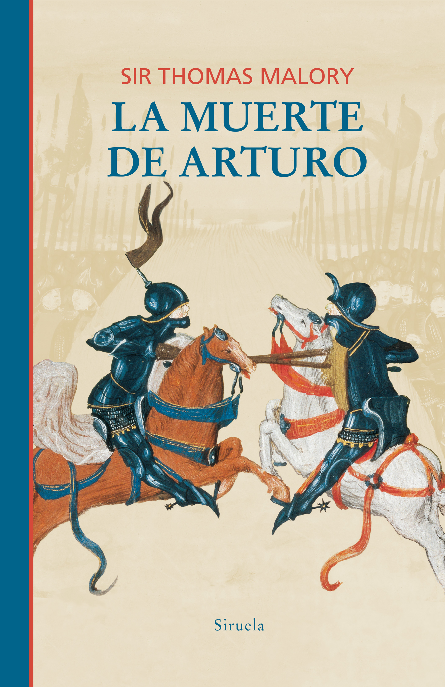
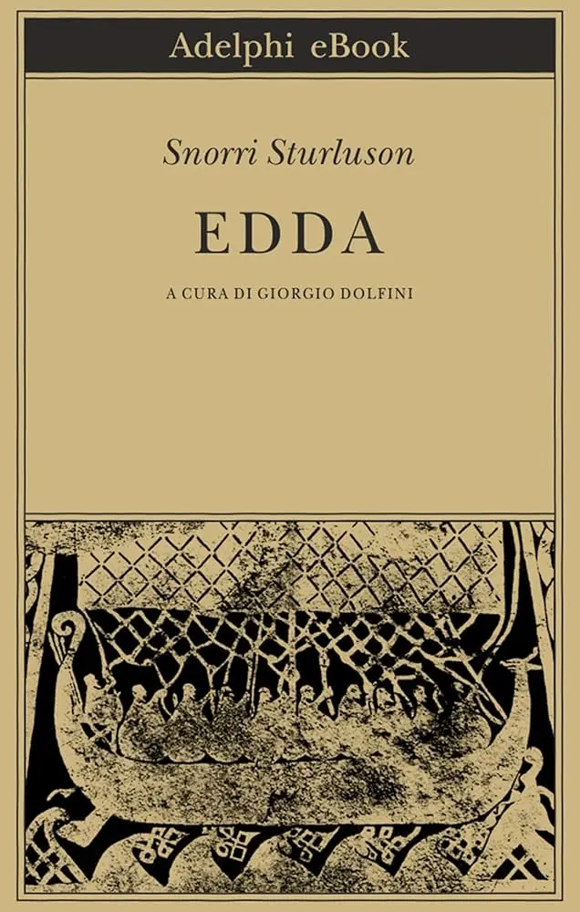
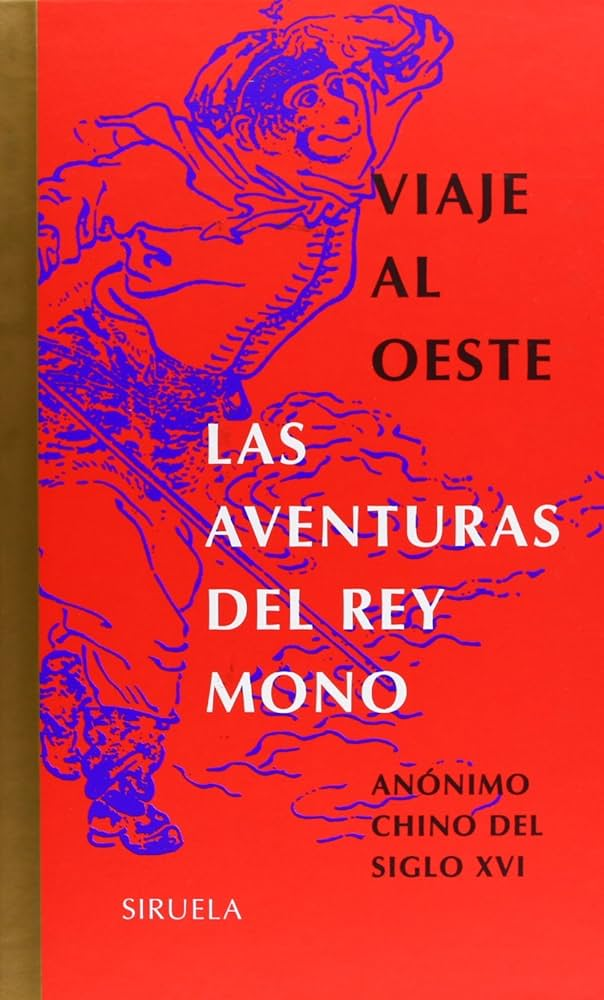

Seccion Fantasia

La Epopeya de Gilgamesh
El poema narrativo más antiguo. El rey Gilgamesh lucha contra bestias y busca la inmortalidad.

Las mil y una noches
Colección de cuentos de Oriente Medio llenos de genios, alfombras voladoras, magia y ciudades perdidas.

Beowulf
Poema épico anglosajón sobre el héroe Beowulf y sus batallas contra el monstruo Grendel y un dragón.

La Muerte de Arturo
La recopilación más influyente de las leyendas del Rey Arturo, Merlín, Excalibur y los Caballeros de la Mesa Redonda.

La Edda Poética
La fuente principal de la mitología nórdica, con las historias de Odín, Thor, Loki y el Ragnarök.

Viaje al Oeste
Una novela clásica china sobre la peregrinación de un monje a la India acompañado por el Rey Mono y otros seres.